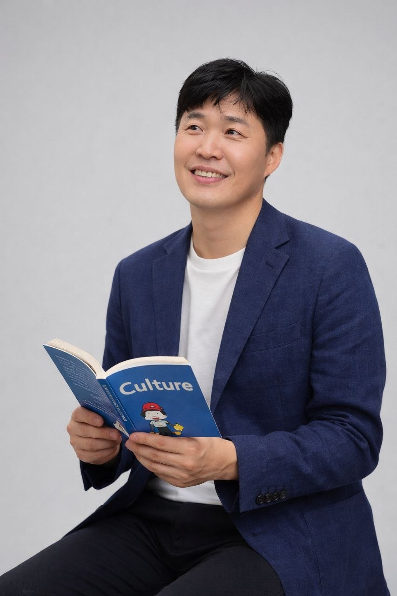

안녕하세요, 호호 코치 최호석입니다. 저는 사람이 자신의 속도와 방식으로 삶과 일의 방향을 다시 정리하고, 불확실한 상황 속에서도 한 걸음씩 앞으로 나아가도록 돕는 코칭을 합니다. 정답을 알려주기보다, 이미 내 안에 있는 가능성과 언어를 함께 발견해 가는 과정을 더 소중하게 생각합니다.
Hello, I’m Hoseock Choi, HoHo Coach. I support people as they rediscover direction in life and work, and move forward one step at a time even in seasons of uncertainty. Rather than giving answers, I care more about helping you uncover the language, strength, and possibility that are already within you.
제 코칭은 심리적 안전감에서 시작합니다. 마음을 지키는 안정감 위에서 지금 내가 할 수 있는 가장 현실적인 선택을 찾고, 완벽함보다 지속 가능한 실행을 통해 변화를 만들어 가도록 돕습니다. 따뜻하지만 흐리지 않고, 현실적이지만 메마르지 않은 코칭을 지향합니다.
My coaching begins with psychological safety. From that grounded place, I help clients find the most realistic next step they can take now, and build lasting change through sustainable action rather than perfection. I aim for coaching that is warm without being vague, and practical without losing humanity.
저는 코칭에서 가장 중요한 것이 ‘이 사람이 원래부터 가능성을 가진 존재임을 믿는 마음’이라고 생각합니다. 그 믿음 위에 신뢰와 공감이 쌓이고, 고객은 자신의 북극성 같은 방향을 조금씩 더 또렷하게 발견해 갑니다. 코칭은 누군가를 밀어붙이는 일이 아니라, 스스로의 힘으로 오래 갈 수 있도록 돕는 동행이라고 믿습니다.
To me, the heart of coaching is a deep belief that each person already carries potential within them. Trust and empathy grow from that belief, and over time clients begin to see their own North Star more clearly. Coaching is not about pushing someone harder—it is about walking with them in a way that helps their own strength last.
제가 가장 보람을 느끼는 순간은 누군가가 ‘이제 다시 해볼 수 있겠다’는 마음을 회복하는 장면을 만날 때입니다. 스스로를 믿지 못하던 사람이 자신의 삶을 다시 설계하고, 지쳐 있던 사람이 가족과 일 속에서 다시 여유와 중심을 찾는 모습을 지켜보며 코칭의 힘을 더 깊이 믿게 되었습니다. 결국 코칭은 더 나은 성과만이 아니라, 더 건강한 마음과 더 단단한 삶을 함께 만들어 가는 일이라고 생각합니다.
The moments that stay with me most are when someone quietly begins to believe, “I can do this again.” Watching people redesign their lives, regain steadiness, and reconnect with family or work in a healthier way has deepened my trust in coaching. In the end, I believe coaching is not only about better performance, but about building a healthier heart and a steadier life.
“늦게나마 저 자신을 천천히 돌아보고, 주변도 더 깊이 이해하게 되었습니다. 지난 3년 동안 함께해주신 시간이 정말 감사하고, 앞으로도 더 배우고 싶습니다.”
“I was able to reflect on myself more deeply and better understand the people around me. I’m truly grateful for the past three years together, and I still want to keep learning.”
장기 코칭 고객
Long-term Coaching Client
“코칭을 통해 제가 정말 원하는 것이 무엇인지 조금씩 찾아갈 수 있었고, 그것을 어떻게 실천할지 계속 고민하고 실행하면서 제 삶이 다듬어지는 느낌을 받았습니다. 목표관리시트와 액션아이템도 실제로 큰 도움이 되었습니다.”
“Through coaching, I gradually discovered what I truly want and how to put it into practice. As I kept reflecting and acting, I felt my life becoming more refined. The goal sheet and action items were genuinely helpful.”
장기 코칭 고객
Long-term Coaching Client